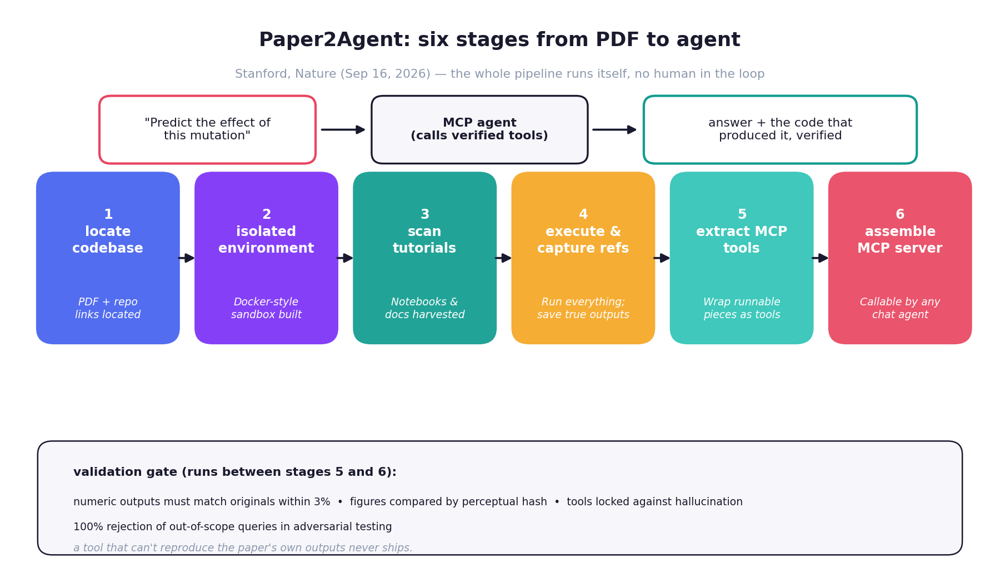
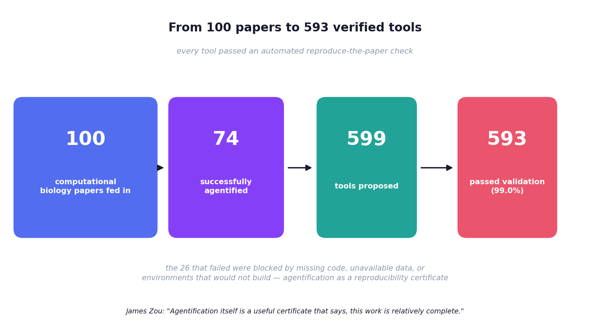
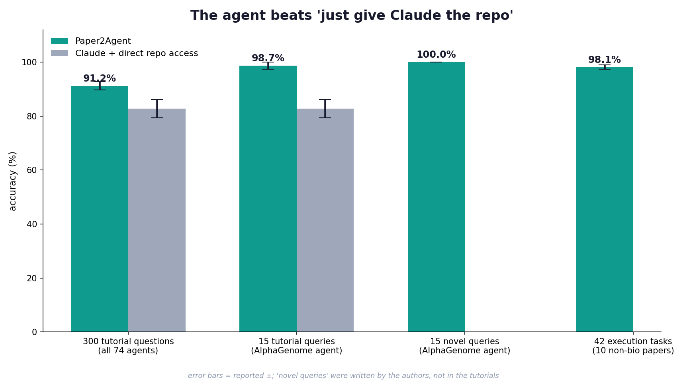
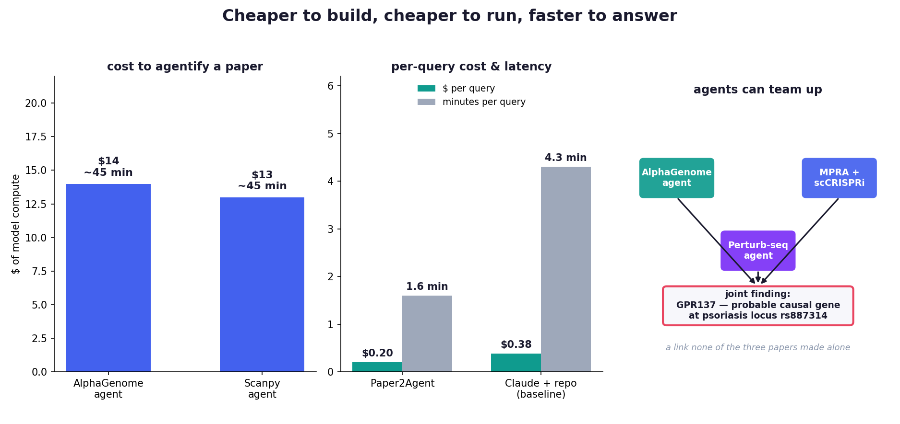

A research paper is a terrible interface to research.
Read the AlphaGenome paper — the one about predicting variant effects — and try to use it. You will clone a repo, fight dependency versions for an afternoon, guess which notebook cell holds the actual method, and hand-translate the figures back into numbers. The paper describes the science. It refuses to do the science.
A Stanford team — Jiacheng Miao, Joe R. Davis, Yaohui Zhang, Jonathan K. Pritchard, and James Zou — published the fix in Nature on September 16, 2026: Paper2Agent, an automated pipeline that converts a research paper into an MCP agent that reruns the paper's own methods on demand. You ask in English. It calls verified tools. You get the answer and the code that produced it.
The headline run: 100 computational biology papers in, 74 converted into working agents, 599 tools extracted, 593 passing automated validation. And the agents beat the obvious alternative — handing Claude the same repos directly — 91.2% to 82.7% on 300 benchmark questions.
ELI5: the cookbook that cooks
A paper is a cookbook: ingredients listed, steps described, a photo of the finished dish. Every reader rebuilds the kitchen from scratch — different ovens, missing spices, a step the author forgot to write down. Half the time dinner fails and nobody knows why.
Paper2Agent turns the cookbook into a chef you can talk to. "Make me the variant-effect prediction for this mutation." The chef doesn't summarize the recipe — it runs the kitchen, hands you the dish, and shows you the exact steps it followed, verified against the original photo.
The key insight: an LLM that has read a repo is a worse scientist than an LLM that can call the repo's verified functions. Reading is fuzzy. Calling is exact.

How it works: six stages, zero humans
Paper2Agent takes a paper and does the whole miserable setup job itself:
- Locate the codebase — find the repo, the notebooks, the docs linked from the paper.
- Build an isolated environment — a sandbox where dependencies get installed and pinned.
- Scan the tutorials — harvest the notebooks and docs that show the methods in action.
- Execute and capture — run everything; save the true outputs as ground truth.
- Extract MCP tools — wrap the runnable pieces as parameterized tools with JSON schemas.
- Assemble the MCP server — a Model Context Protocol server any chat agent can call in natural language.
The validation gate between stages 5 and 6 is the whole ballgame: numeric outputs must match the paper's own results within 3%, generated figures are compared by perceptual hash, the tools are locked so the model can't improvise new behavior, and adversarial testing showed a 100% correct rejection rate on out-of-scope queries. A tool that can't reproduce the paper's own outputs never ships.
The numbers (SOTA section)
The scale run is what makes this a Nature paper and not a demo:
- 100 papers → 74 agents. The 26 failures were blocked by missing code, unavailable data, or environments that wouldn't build. James Zou's framing: "Agentification itself is a useful certificate that says, 'This work is relatively complete.'" The pipeline doubles as a reproducibility audit.
- 599 tools proposed → 593 validated (99.0%). Six tools failed the reproduce-the-paper gate — exactly the gate working as designed.
- 91.2 ± 1.6% vs 82.7 ± 3.4% on 300 tutorial-derived questions across all 74 agents. Same knowledge, same model family — the difference is packaging: callable tools beat a pile of files.
- The AlphaGenome agent specifically: 22 tools built in ~45 minutes for ~$14 of compute. 98.7 ± 1.3% on 15 tutorial queries, 100% on 15 novel queries the authors wrote themselves (not in the tutorials).
- Beyond biology: 42 execution tasks from 10 non-biology computational papers hit 98.1 ± 0.8%, with median runtime 1.9× faster than Claude-plus-repo and 3.1× faster than Biomni.
- Economics: $14 and ~45 minutes to agentify a paper. Per query: $0.20 vs $0.38 baseline, 1.6 minutes vs 4.3 minutes latency.


The part that matters most: agents that team up
One agent answering questions is a better search engine. Three agents collaborating is something new.
The authors built agents from three unrelated papers — an AlphaGenome variant-effect agent, an MPRA-coupled scCRISPRi screening agent, and a CD4+ T cell Perturb-seq agent — and let them chain computational predictions with experimental screens. Together they prioritized GPR137 as a probable causal gene at the psoriasis-associated locus rs887314. None of the three papers made that connection alone.
A separate Stanford Medicine demo: two agents from unrelated studies (a mutation-prediction tool and an ADHD genome-wide association study) surfaced a previously unreported variant near MPHOSPH9 tied to increased ADHD risk. Zou's vision: "millions of paper agents finding overlapping work at scale" — pairs of studies whose authors would otherwise never stumble into each other. He is blunt about the credit question: discoveries still get attributed back to the original papers and human authors.

The limits, stated plainly
The paper doesn't soft-pedal them, so neither will I:
- 26% of papers wouldn't convert. Missing code, missing data, unbuildable environments. That's a reproducibility scandal wearing a success metric — and the authors know it.
- Humans still own the science. Open-ended hypothesis selection and evidence evaluation stay human-in-the-loop. The agent reruns and applies methods; it doesn't decide what matters.
- Every agent rots. MCP servers built this way need upkeep as upstream dependencies drift. A paper-agent is a living artifact with maintenance costs, not a PDF you file away.
- The "novel query" caveat. The 100%-on-novel-queries result used 15 questions the authors wrote. Independent benchmarks will be the real test.
Outside voices are interested but hedged — the right posture. Olivier Elemento (Weill Cornell): "a real advance in terms of how we think about the publication process, with AI at the center." Dongping Chen (U. Maryland) called executable papers "quite compelling." Nobody is claiming the peer-review replacement yet.
Takeaways
- The paper is becoming an API. Paper2Agent's bet: knowledge should ship as runnable, validated tools — not static text. 74 papers, 593 tools, 99% validation pass.
- Structure beats access. Same model, same repos: 91.2% as callable tools vs 82.7% as files. The packaging of knowledge is now a first-class performance lever.
- Validation is the product. The 3%-tolerance reproduce-the-paper gate + tool locking is what makes this trustworthy. Wrapping code in JSON-RPC is trivial; proving the wrapper reproduces the science is the contribution.
- Agents compose. Three paper-agents found GPR137 at rs887314 — a discovery none of the three papers made alone. The network of paper-agents is the real endgame.
- Agentification is a reproducibility certificate. If your paper can't survive the pipeline, that's data about your paper.
Sources: Nature (Sep 16, 2026) — "Reimagining research papers as interactive and reliable AI agents" (Miao, Davis, Zhang, Pritchard, Zou); AI Weekly coverage (Sep 24, 2026); IEEE Spectrum; Stanford Medicine. Numbers as reported by the authors.